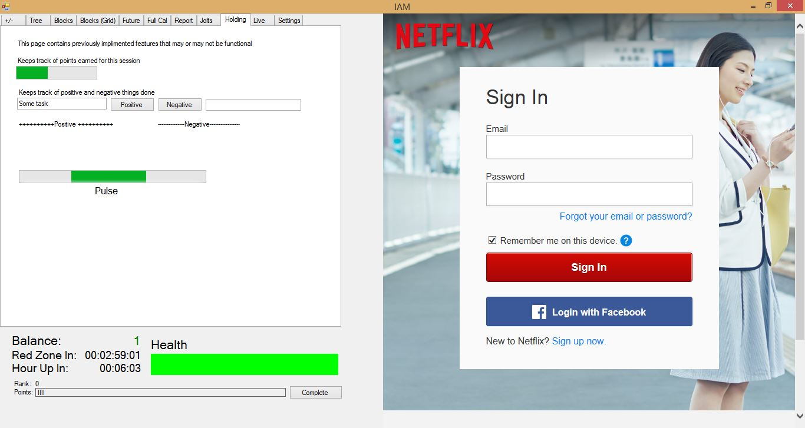
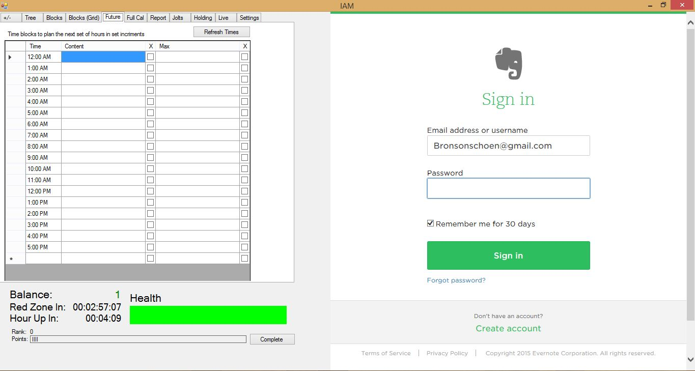
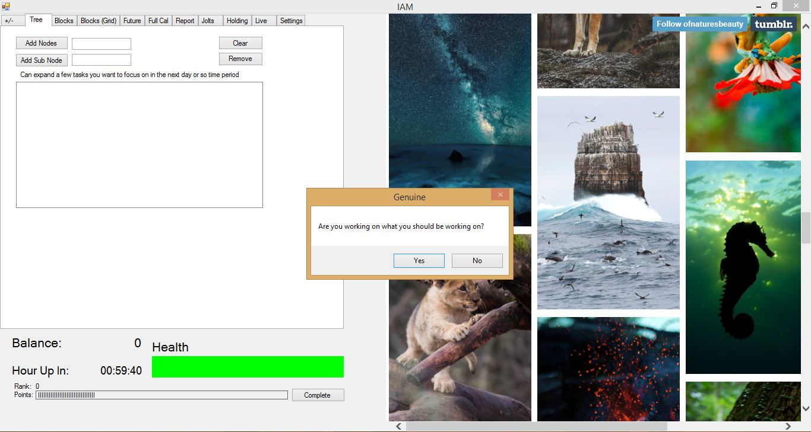

IAM: The First Iteration
Automation is the future
First attempt at automating my workflow. Visual C# allowed for fast prototyping.
Entertainment (Or Not):
- Right side screen allows for entertainment or productivity apps while making quick (thus usually distracted) navigating more involved

Time Tracking
- Multiple grid views for whatever time blocking user is comfortable with
- Notifies user how much time until they enter the "Red Zone" (Critically close to the next major assignment due).

Awesomely Annoying "Jolts"
- Health bar measures how frequently, probing at random, user is working.
- "Jolts" (message prompts) pop up with increasing frequency as health gets low.
- An answer of "No" triggers increasingly annoying messages until you answer why you weren't working.
